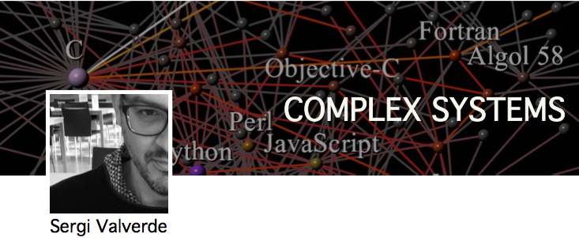

Welcome
My group develops and applies theoretical and computational models to solve problems in biology and medicine. In the short term, models play an important role in the successful development of technological systems. In the long term, the integration of engineering and knowledge will enable us to understand the design principles and dynamics of living systems (systems biology) and apply these principles to engineer new cellular behaviour (synthetic biology).
My research field, complex networks, plays an important role in the emerging fields of systems and synthetic biology. I am interested in applying network theory to understand the origin of biological and artificial complexity. Although we focus in specific systems (read more ), network theory and associated methods have wider applicability. Network techniques allow for (1) analysis of experimental results, (2) comparison between real and simulated systems, (3) quantifying the degree of uncertainty in network models and (4) improving data collection methods.
I am Visiting Professor at the Complex Systems Lab (Universitat Pompeu Fabra).